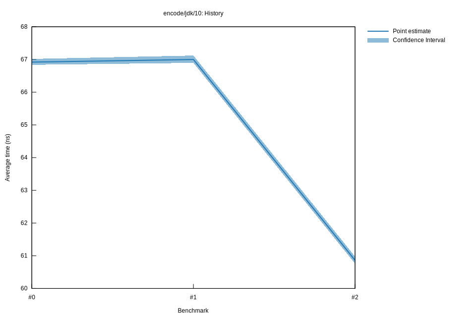

# 22022-10-16T20:01:39+03:00
|
Lower Bound |
Estimate |
Upper Bound |
| Value: |
60.76ns |
60.86ns |
60.97ns |
| Throughput: |
188.35MiB/s |
188.04MiB/s |
187.69MiB/s |
| Change in Value: |
-9.5124% |
-9.2679% |
-9.0407% |
| Change in Throughput: |
+10.512% |
+10.215% |
+9.9393% |
No change in performance detected.
# 12022-10-16T17:21:54+03:00
|
Lower Bound |
Estimate |
Upper Bound |
| Value: |
66.90ns |
67.00ns |
67.12ns |
| Throughput: |
171.07MiB/s |
170.81MiB/s |
170.50MiB/s |
| Change in Value: |
-0.1563% |
+0.1077% |
+0.4195% |
| Change in Throughput: |
+0.1565% |
-0.1076% |
-0.4178% |
Change within noise threshold.
# 02022-10-15T17:13:48+03:00
|
Lower Bound |
Estimate |
Upper Bound |
| Value: |
66.84ns |
66.92ns |
67.02ns |
| Throughput: |
171.22MiB/s |
171.01MiB/s |
170.77MiB/s |